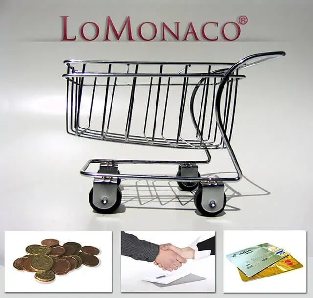

Facilidades de pago con tu colchón

Esto podemos entenderlo en dos vertientes: por un lado, la confianza en el cierre de la compra (no hay nada como la satisfacción de sentirnos seguros, sabiendo que nuestra inversión no corre ningún riesgo) y por otro lado, la posibilidad de aspirar a un producto de alto valor, desembolsando pequeñas cantidades de dinero, sin que nuestro bolsillo se vea afectado.
Un buen equipo de descanso, supone un importante y razonable gasto, que debe ser considerado como una inversión a medio plazo en salud, que además se realiza en rangos muy espaciados en el tiempo (y es que no cambiamos de colchón todos los días)por lo que apostaremos siempre por garantía de calidad en el producto, sin escatimar en el gasto. Dada la amplia oferta de productos de cualquier sector (y el del descanso no iba a ser menos), un abanico de formas de pago, donde elegir la más idónea a nuestras necesidades, puede llegar a ser un aspecto decisorio a la hora de decantarse por un determinado tipo de colchón, somier, canapé o almohada (y resto de elementos del equipo de descanso). Conscientes de toda esta particular casuística, en Grupo Lo Monaco, ofrecemos todas las opciones posibles para hacer tu compra mucho más sencilla, en lo que al pago se refiere.
-Tarjeta de crédito: Es la facilidad de pago en su máxima expresión. En Grupo Lo Monaco puedes pagar con tarjeta siempre, bien cuando cierras el pago con un asesor en casa, o cuando haces la compra online, puedes utilizar tu Visa o Master Card para completar el pedido, con total tranquilidad. Además Grupo Lo Monaco es una empresa adherida a Confianza on-Line y dispone del sistema Norton Secured de Symantec, que garantiza la protección de los datos ofrecidos en la operaciones realizadas en su web.
– Contrarrembolso: Es la forma de pago ideal si no dispones de tarjeta de crédito, o simplemente no te sientes cómodo con este tipo de transacción. Consiste en abonar en efectivo, el importe íntegro de la compra, cuando el pedido se te entrega, eso sí, el importe no puede superar los 2.500€ (I.V.A incluido), según legislación vigente.
– Financiación hasta en 36 meses sin intereses: Es la forma de pago que marca la diferencia y una opción más que ventajosa. El importe de la compra se divide en diferentes cuotas que tú eliges, y los intereses son asumidos por Grupo Lo Monaco. Si es la opción de pago que llevas tiempo buscando, consulta detalladamente las condiciones de financiación que ofrece Lo Monaco.
Sentirás así que Grupo Lo Monaco es cómodo para descansar y cómodo para pagar.